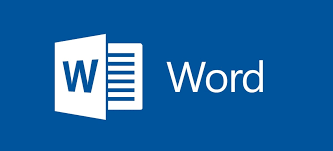
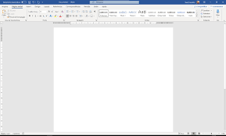

Word
O que é:
é um programa de processamento de texto, projetado para ajudá-lo a criar documentos de qualidade profissional. Com as melhores ferramentas de formatação de documento, o Word ajuda a organizar e escrever os documentos com mais eficiência.

Atalhos:
| Atalhos: |
Para o que serve |
| Ctrl+O |
abrir um arquivo |
|
| Ctrl+A |
seleciona todo o conteúdo |
| Ctrl+E |
centraliza todo o texto |
| Ctrl+Z |
refaz a ultima ação |
| Ctrl+] |
aumenta em 1 ponto o tamanho da fonte |
| Ctrl+S |
salva o documento |
| tab |
coloca um paragrafo |
| tab |
coloca um paragrafo |
| tab |
coloca um paragrafo |
| tab |
coloca um paragrafo |